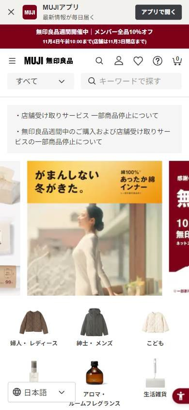
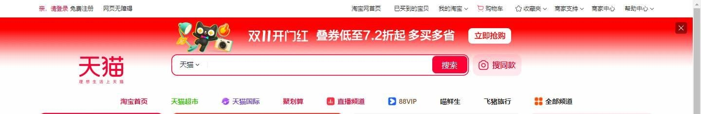
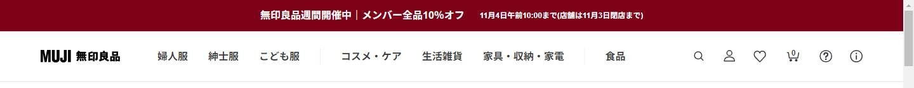
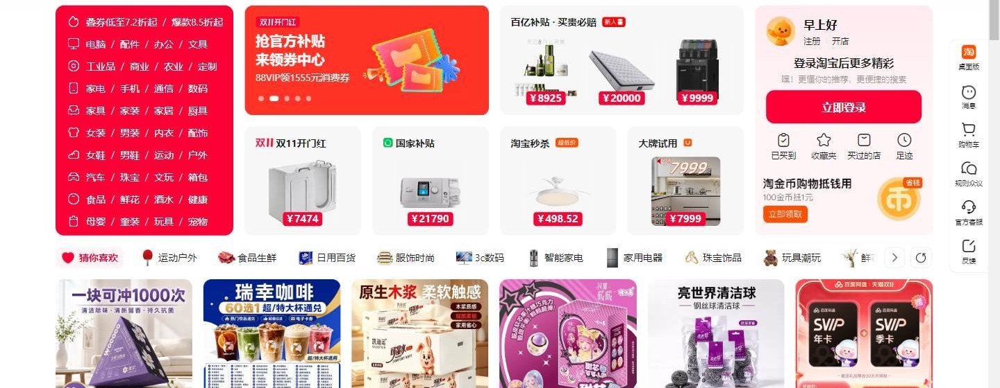
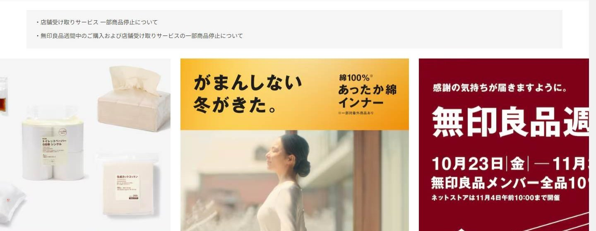

Tienda online que compite por calidad o marca
Los seleccionados
Los dos sitios más visitados que compiten de esta forma, según estadísticas de tráfico.
China no tiene suficientes tiendas que compitan por calidad o marca entre las más visitadas, así que completamos la comparación con las que lideran ese segmento en Japón.
En resumen: lo que hacen los líderes
La pantalla de inicio de cada uno

Estilo visual
Colores, imágenes, tipografía y cuánta información muestran.
Tu estilo visual debería…
- Si vendés marcas en China, la convención es densa y roja; si sos una marca propia, podés ser sobria.
Lo que tienen en común: Dos extremos: el marketplace chino de marcas es denso y rojo; la marca japonesa, sobria y con aire.
La paleta de cada uno
Medida sobre la primera pantalla. Los colores de marca salen del header; el resto muestra cuánto espacio ocupa cada color.
Así lo resuelve cada uno
Ficha comparativa
| Aspecto | Tmall | MUJI |
|---|---|---|
| Paleta | Variada: rojo de marca + muchos colores de promo | Acotada: bordó + blanco y beige |
| Densidad | Muy alta | Media |
| Imágenes | Fotos de producto chicas | Fotos de producto y ambiente grandes |
Header
La franja de arriba con el logo y los accesos.
Tu header debería…
- Buscador protagonista si tenés muchas marcas; ícono si vendés una sola.
Lo que tienen en común: El marketplace hace protagonista al buscador; la marca propia lo reduce a un ícono.
Así lo resuelve cada uno


Ficha comparativa
| Aspecto | Tmall | MUJI |
|---|---|---|
| Fondo | Rojo de marca | Blanco |
| Logo | Gato de la marca, a la izquierda | A la izquierda |
| Buscador | Protagonista, con botón | Ícono |
Primera pantalla
Lo primero que se ve debajo del header.
Tu primera pantalla debería…
- Elegí según tu catálogo: tres columnas para muchas categorías, carrusel simple para una marca.
Lo que tienen en común: Estructuras distintas: tres columnas en el marketplace y carrusel simple en la marca.
Así lo resuelve cada uno


Ficha comparativa
| Aspecto | Tmall | MUJI |
|---|---|---|
| Formato | Columna de categorías + banner + panel de cuenta | Carrusel de banners |